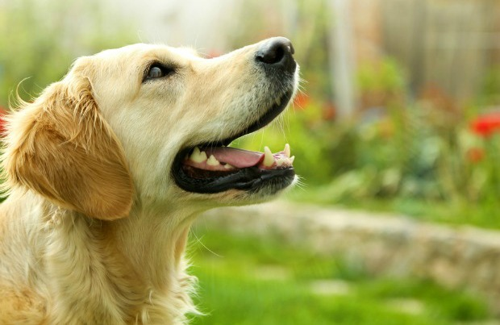
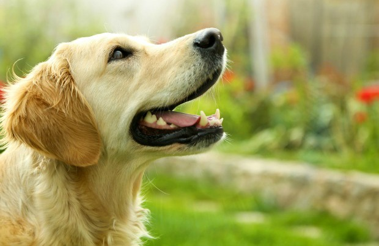

כל מה שלא ידעתם על גולדן רטריבר
כלבי הגולדן רטריבר מחולקים לשתי קבוצות, החלוקה מבוססת בעיקר על המראה שלהם. הקבוצה הראשונה היא הקבוצה האנגלית, כלבים אלו נמוכים יותר, העצמות שלהם כבדות והפרווה ארוכה ובהירה בצבעה. הקבוצה האמריקאית מכילה כלבים גבוהים ורזים עם גפיים ארוכות יותר, מלבד זאת היא דומה במאפייניה לקבוצה הראשונה. לכלבי הגולדן רטריבר עיניים מלאות הבעה ואף שחור. ככל שהם מתבגרים החזה שלהם הופך לרחב יותר וגופם מקבל מבנה שרירי. הזנב של כלבים אלו תמיד מכשכש
כלבי הגולדן רטריבר הם בדרך כלל מלאי ביטחון, שבא לידי ביטוי בדרך שבה הם הולכים, הגוף שלהם סימטרי והם מאוד אתלטיים. הגישה שלהם שלווה ומלאת חיבה. לכלבי הגולדן רטריבר פרווה כפולה, הפרווה החיצונית היא רכה כנוצה והיא יכולה להיות ישרה או גלית, הפרווה התחתונה היא עמידה בפניי מים ושומרת על חום גופו של הגולדן. הגולדן משיר את פרוותו ובזכות כך היא מתאימה לו לכל עונות השנה.
כלבי הגולדן רטריבר מחולקים לשתי קבוצות, החלוקה מבוססת בעיקר על המראה שלהם. הקבוצה הראשונה היא הקבוצה האנגלית, כלבים אלו נמוכים יותר, העצמות שלהם כבדות והפרווה ארוכה ובהירה בצבעה. הקבוצה האמריקאית מכילה כלבים גבוהים ורזים עם גפיים ארוכות יותר, מלבד זאת היא דומה במאפייניה לקבוצה הראשונה. לכלבי הגולדן רטריבר עיניים מלאות הבעה ואף שחור. ככל שהם מתבגרים החזה שלהם הופך לרחב יותר וגופם מקבל מבנה שרירי. הזנב של כלבים אלו תמיד מכשכש. כלבי הגולדן רטריבר הם בדרך כלל מלאי ביטחון, שבא לידי ביטוי בדרך שבה הם הולכים, הגוף שלהם סימטרי והם מאוד אתלטיים. הגישה שלהם שלווה ומלאת חיבה. לכלבי הגולדן רטריבר פרווה כפולה, הפרווה החיצונית היא רכה כנוצה והיא יכולה להיות ישרה או גלית, הפרווה התחתונה היא עמידה בפניי מים ושומרת על חום גופו של הגולדן. הגולדן משיר את פרוותו ובזכות כך היא מתאימה לו לכל עונות השנה.
כלבי הגולדן רטריבר הם משפחתיים ונאמנים מאוד. האופי הנוח שלהם הופך אותם למתוקים ועדינים עם ילדים וסובלניים כלפי בעלי חיים אחרים. חשוב לזכור שיש להם נטייה להתרגש כמו גורים, כאשר הם משחקים עם ילדים והם עשויים בטעות לפגוע בהם. אגרסיביות היא אינה תופעה נפוצה אצל הגולדנים, אבל הרבעה לא נכונה יכולה לגרום לכך. כלבים אלו אוהבים אנשים ואוהבים להיות מלוטפים ומחובקים בכל זמן, הם יכולים להיכנס לצרות אם הם יישארו לבדם לזמן ממושך, במצב כזה הם גם עלולים לפתח חרדת נטישה, ולהיות אומללים וחרדתיים.
כלבי הגולדן אינם טובים בתור כלבי שמירה מכיוון שהם יותר מעוניינים לפגוש זרים ולהתיידד עמם מאשר לנבוח עליהם. הם אוהבים ונאמנים וינסו לרצות את האנשים שלהם כל הזמן. לכלבי הגולדן רטריבר רמת אנרגיה גבוהה, הם אוהבים מאוד לשחק בלהביא חפצים, הם גם מאוד אוהבים מים. האינטליגנציה הגבוהה של כלבי הגולדן רטריבר הופכת אותם למצוינים באימוני צייתנות. לעיתים קרובות גזע זה משמש ככלבי שירות לעיוורים ולנכים. האישיות האידיאלית שלהם, מלאת החיבה, הופכת אותם גם למבקרים מצוינים בבתי אבות והם יכולים להיות כלבי תרפיה נפלאים.
 
